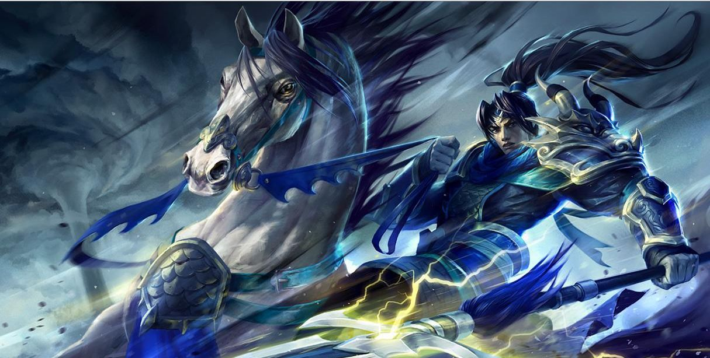

观点：“赵云拒嫂”：赵云为何不娶有“倾城之色”的美女为妻
陈骏千
2017-05-30 19:23 来源：澎湃新闻
建安十三年（公元208），赤壁之战中落败的曹操仓皇返回北方，刚刚收入手中的荆州陷入无主状态。而一直无处落脚的刘备则趁此机会，一举占领了荆州南部（约相当于今湖南省）的武陵、桂阳、零陵、长沙，即所谓“荆南四郡”。这一历史事件被改编成多种文学形式，如元杂剧《庞掠四郡》、清代乱弹戏《取四郡》、子弟书《三战黄忠》等。当然，《三国演义》也不可能将其放过，现在通行的毛宗岗本五十二、五十三回便是这个故事。
作为战利品的女人
在四郡之中，负责攻取桂阳的是常胜将军赵云。而取桂阳没有遇到什么困难：经历了简单的交锋之后，桂阳太守赵范便开城投降。而在投降之后，赵范宴请赵云，酒席上发生了这样一个插曲。
云饮微醉，范忽请出一妇人，与云把酒。子龙见妇人身穿缟素，有倾国倾城之色，乃问范曰：“此何人也？”范曰：“家嫂樊氏也。”子龙改容敬之。
酒至半酣，又有美人把酒，场面顿时笼罩上了一层香艳的色彩，向来一副道学面孔的毛宗岗也不禁飘飘然，评道：“谁想此时忽然遇一文君。”然而不料赵云却比毛宗岗更道学，得知对面的美女是赵范的寡嫂后，立刻“改容敬之”，不敢失了礼节。而赵范却并未察觉赵云态度的变化，提出要将寡嫂许配赵云，这一下捅了马蜂窝。
云闻言大怒而起，厉声曰：“吾既与汝结为兄弟，汝嫂即吾嫂也，岂可作此乱人伦之事乎！”赵范羞惭满面，答曰：“我好意相待，如何这般无礼！”遂目视左右，有相害之意。云已觉，一拳打倒赵范，径出府门，上马出城去了。
之后赵范见无可挽回，便又反叛，但不久又被赵云活捉。桂阳平定以后，刘备问起事情的原委，赵云的回答也是一本正经。
云曰：“赵范既与某结为兄弟，今若娶其嫂，惹人唾骂，一也；其妇再嫁，使其失节，二也；赵范初降，其心难测，三也。主公新定江汉，云安敢以一妇人而废主公之大事！”玄德曰：“今大事已定，与汝娶之，若何？”云曰：“天下女子不少，但恐名誉不立，何患无妻子乎？”玄德曰：“子龙真丈夫也。”

《三国演义》明万历辛卯（十九年，1591）周曰校刊本插图
赵云提出了三个理由：第一点是以弟娶嫂于理不通；第二点是妇人再嫁有失贞节；第三点是不信任赵范，怕因为娶妻耽误了大事。而之后两人的问答则颇具意味，刘备仅仅以“大事已定”打消了赵云的第三个理由，而前两条则干脆置之不理。而对于刘备的话，赵云居然也没有坚持前两条，而是抛出了“天下女子不少”的话来。可以看出，所谓叔嫂之礼，守贞之节，不过是赵云的借口。
实际上，赵云和刘备年纪相仿，此时都是年近半百的人了，虽然没有直接的证据，但不难想象，赵云应当已经有了妻子，如果再娶樊氏，即是纳妾。所谓“娶妻取德，纳妾纳色”，本来没有那么多的束缚。在刘备的逼问下，赵云终于说出了不愿娶樊氏的理由：“但恐名誉不立”，也就是担心像战利品一样夺取樊氏，可能会损害自己的名誉。那么，以女人作为战利品，在那个时代真的是一件不名誉的事吗？
说到抢夺女人，三国爱好者之间有一个著名的说法叫“曹魏爱人妻”。似乎抢夺女人是曹家的专利，无论是曹操抢夺张济之妻邹氏，还是之后觊觎东吴二乔，乃至于“龙生龙凤生凤”，曹丕年仅十八就抢走了袁熙的妻子甄氏，而曹植对这位嫂子也是念念不忘。这些故事深入人心，但是实际上，刘备和他的伙计们也并不干净。《三国志》卷九夏侯渊传中，裴松之注引《魏略》说：
初，建安五年，时（夏侯）霸从妹年十三四，在本郡出城樵采，为张飞所得。飞知其良家女，遂以为妻，产息女，为刘禅皇后。
这位夏侯氏的详细身份不详，由于是夏侯霸（夏侯渊之子）的从妹（堂妹或表妹，堂妹的可能性较大），坊间传说是夏侯惇之女，当然这是一种臆测。张飞盗马尽人皆知，却少有人知道他曾经拐带妇女，而且居然是夏侯氏的女子。如果当真如此，张飞恐怕要管老对头夏侯惇叫一声叔叔了。
而一向以坐怀不乱著称的关二爷，也曾对有夫之妇动过心，而且同抢妻老手曹操看上同一个女人，争风吃醋。《三国志》卷三十六关羽传中，裴注引《蜀记》说：
曹公与刘备围吕布于下邳，关羽启公，布使秦宜禄行求救，乞娶其妻，公许之。临破，又屡启于公。公疑其有异色，先遣迎看，因自留之，羽心不安。此与《魏氏春秋》所说无异也。
关羽听说吕布部将秦宜禄的妻子有绝色，几次三番向曹操请示，要娶为妻子。不料被“老司机”曹操截胡，为此关羽还心生不满。顺带一提，吕布被擒后，这位秦宜禄投降曹操，做了一任县官，后来被张飞所杀。他的儿子秦朗认曹操做了父亲，官做到骁骑将军，事见于《三国志》明帝纪。
而刘备自己也堂而皇之地娶了自己远房堂弟刘瑁的妻子吴氏，并且立为皇后。《三国志》卷三十四，先主穆皇后传中说：
先主穆皇后，陈留人也。兄吴壹，少孤，壹父与刘焉有旧，是以居家随焉入蜀。焉有异志，而闻善相者相后当大贵。焉时将子瑁自随，遂为瑁纳后。瑁死，后寡居。先主既定益州，而孙夫人还吴，群下劝先主聘后。先主疑与瑁同族，法正进曰：“论其亲疏，何与晋文至于子圉乎？”于是纳后为夫人。
难怪刘备毫不在意地劝赵云娶寡嫂，因为之后不久，刘备自己就身体力行了。不管怎样，从历史记述来看，无论是抢夺幼年女子，强占有夫之妇，还是迎娶兄弟寡妻，在那个时代都是司空见惯的事。这也不奇怪，一者当时天下大乱，女性被当做财物互相争夺；二者后世所谓“一女不嫁二夫”之类的贞洁观念要到宋代以后才完全确立，不能用后世的道德规范去要求前朝的人。

《三国演义》明万历壬辰（二十年，1592）余象斗刊本插图及批评（红框中）
赵云为何拒嫂？
话题回到赵云，历史上赵云不愿娶樊氏的真实理由是什么呢？
“赵云拒嫂”故事的原型出自《三国志》卷三十六赵云传中，裴注引赵云《别传》的记述：
（赵）范寡嫂曰樊氏，有国色，范欲以配云。云辞曰：“相与同姓，卿兄犹我兄。”固辞不许。时有人劝云纳之，云曰：“范迫降耳，心未可测；天下女不少。”遂不娶。范果逃走，云无纤介。
从表面上看，似乎和《演义》并无太大区别，但联系到事件的前因后果，便能看出，同姓只是推辞的借口，赵云不愿娶樊氏的真正理由是不信任赵范，不愿意和赵范扯上关系而将来受其牵连。事实上，赵范果然背叛了刘备，而赵云由于拒绝了和赵范联姻，没有任何责任。所以裴注所引这段材料，为的是表现赵云有先见之明，不贪眼前小利。从这个角度上看，“天下女不少”应当解读为“只要不像樊氏一样惹火上身，天下的女子要多少有多少”，而《演义》中则应理解为“天下众多女子中，应该选一个有德行的，不应选樊氏”。

日本天保年间（19世纪初）刊《演义三国志图鉴》中的赵云像
这样一来，似乎可以想当然地认为，由《三国志》向《演义》改编的过程中，由于受到儒家思想，尤其是南宋以来的礼教影响。《演义》许多刊本都标榜“按鉴”，即参照朱熹的《资治通鉴纲目》编排。而作为“正面人物”的赵云逐渐被披上了儒家道德的外衣。不过事情并不那么简单。《三国志》和《演义》之间还有一个重要的过渡阶段，这就是通常认为成书于元代的《三国志平话》。在这里，有必要对《平话》相关部分也进行考察。
筵会至晚，赵范带酒留数十个妇人，内中一妇人身着绛衣，体貌娇容，使捧酒对赵云言：“此乃家嫂也，当与子龙为妻。”赵云叫：“尔乃匹夫之辈，军师严令，岂以酒色为念！”言罢出衙。赵范带酒云：“不仁者赵云！”引三千军围了馆驿，有意杀赵云，被子龙一箭射死。
与《演义》相比，《平话》有以下几点不同：
1、陪酒的女性由樊氏一人变为几十人，营造出一种粉黛林立的气氛。
2、樊氏的装束由“缟素”变为“绛衣”，刻意隐去了樊氏的寡妇身份，使其盛装服侍赵云。
3、赵云的反应比《演义》更加激烈，不仅对赵范恶语相加，并且最终反目，并将赵范杀死。
众所周知，三国故事在由《平话》过渡到《演义》，以及由《演义》早期版本发展到后期版本直到毛氏本的过程中，不断地经过文人的加工，而且时期越晚，参与加工的文人层次越高，到了后期甚至出现了李卓吾、金圣叹等一流文人的名字（当然，一般认为书肆假托的可能性较大）。所以反过来说，版本越早，就越少经文人之手，反映的内容也就越接近江湖人的心态。在这个意义上讲，《平话》中的赵云，相比《演义》（尤其是后期）中的文人化、儒家化了的赵云，更加接近一种江湖侠客的形象。那么，江湖人对待女性是什么态度呢？王学泰在《游民文化与中国社会》中这样评价：
《三国志平话》、《水浒传》、《三国志演义》对于妇女的态度则是漠视甚至是敌视的。其主要原因有两点，一是游民没有正常的家庭生活，他们对于构成家庭另一半的态度易于在艳羡（多是“形而下”的遐想）与抵制之间震荡。……江湖上流行有好汉不应近女色的舆论。他们既要做好汉，就不能不压抑心中的欲火，硬着头皮做好汉。因此才会出现《水浒传》对女性的变态反映。
二是习武生活对女性有一种恐惧感，传统养生思想认为过多地接近女性是会损耗身体的。……宋代武侠多沉沦于社会底层，浪迹江湖，这样，好不好女色逐渐成为江湖评价一个人是否是好汉的标准。好汉英雄都是不好女色的。

王学泰著《游民文化与中国社会》
正如王氏所说，传统小说中，凡是带有江湖气息的英雄，都对女性有着由衷的反感。像《水浒传》中的武松、《三侠五义》中的白玉堂、《三侠剑》中的蒋伯芳等，一旦有女性向他们表示亲昵，他们便立刻暴跳如雷，认为是受了天大的侮辱。《三国志平话》中的赵云也是这样的。赵范设下的美女如云的宴席已经令他极其不快，至于要将嫂子许配赵云，从江湖人的价值来看，这是要“撅棍儿”（黑话，即寻找事由，破坏对方的英雄名声），因此赵云才会如此激动。此外，这里的赵云也像江湖的草莽英雄一样，一言不合就动手伤人，最终杀死赵范，这与怒杀阎婆惜的宋江倒有几分相似。
于是，这样一种“江湖式不近女色”的赵云，经过无数文人的层层包装，逐渐地披上了儒家伦理的外衣，变成了严守礼节的卫道士。但是，字里行间仍旧藏不住暴躁的江湖气概，《演义》中的赵云在拂袖而走之前，重重地一拳将赵范打倒在地，这是文人无论如何也做不到的。或者说，《平话》中赵云射向赵范的箭，被儒家伦理层层包裹，最终变成了一只拳头。而这只拳头，仍然有力。
由《三国志》中精明的赵云，到《平话》中暴躁的赵云，再到《演义》中道学的赵云，每个赵云都不过是作者脑中的虚像，随着时代、创作者与受众群体的变迁，英雄也显示出截然不同的面貌。